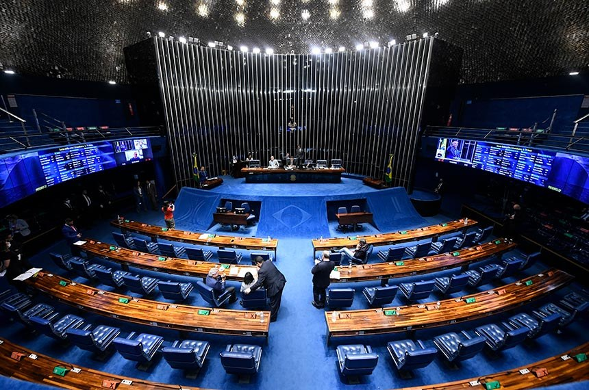

Estados Unidos (EUA)
Historia
O território dos Estados Unidos anteriormente fora habitado por povos indígenas. Porém, as descobertas das terras indígenas pelos europeus culminaram na colonização do território por parte dos franceses, ingleses, espanhóis e holandeses. Os ingleses colonizaram a costa leste do país e nela estabeleceram as chamadas "Treze Colônias", entre os séculos XVII e XVIII, em meio a diversos conflitos entre colonizadores e indígenas.
As Treze Colônias eram:
Os Estados Unidos tornaram-se independentes da Inglaterra em 1776, no dia 4 de julho. Esse fato foi reconhecido no ano de 1783 por meio do Tratado de Paris, um acordo internacional que confirmava o fim da Guerra da Independência dos Estados Unidos.
cultura
McDonald's é considerada a maior rede de restaurantes de fast-food de hambúrguer do mundo, com sede nos Estados Unidos.*
Em virtude de sua grande extensão territorial e uma enorme pluralidade cultural, visto a presença de inúmeras etnias no país, bem como milhares de estrangeiros, os Estados Unidos são um dos países de maior diversidade. Seja nos aspectos naturais, com diferentes climas e relevos ao longo do seu território, seja em costumes, tradições e línguas espalhadas ao longo do território.
Pessoas no mundo todo sofrem influência da cultura norte-americana na gastronomia, moda, esporte e entretenimento.
Além disso, a música, a arte, o cinema, os esportes e a gastronomia são marcantes não só no país, mas também em todas as regiões do mundo. Os estadunidenses são uma das maiores potências olímpicas, apresentando fortes equipes em diversos esportes. E quem nunca comeu um fast-food? Sanduíches, batata frita, bacon são símbolos da culinária no país e difundiram-se pelo mundo todo.
Outra das principais características desse povo é a sua individualidade. A população do país valoriza muito a sua cultura, sendo, portanto, muito patriotas, por isso é possível encontrar diversas bandeiras do país hasteadas nos mais diversos locais.
Informações gerais
PIB: 2,6%
IDIOMA: inglês
O Produto Interno Bruto (PIB) dos Estados Unidos cresceu ao ritmo anualizado de 2,6% no terceiro trimestre de 2022, de acordo com estimativa inicial divulgada nesta quinta-feira (27) pelo Departamento de Comércio do país
POPULAÇÃO:
Vivem nos Estados Unidos, segundo o IBGE, 326.766.748 habitantes, ocupando o terceiro lugar no ranking de países mais populosos do mundo. Além de sua população natal, o país também conta com um enorme contingente de imigrantes vindos da América Latina e da Ásia, especialmente.
Em 2017, o número de imigrantes nos Estados Unidos ultrapassou 43 milhões, segundo relatório apresentado pelo Centro para Estudos de Imigração. Os mexicanos aparecem em maior número. O estado da Califórnia é o que apresenta maior número de estrangeiros. De acordo com o Ministério de Relações Exteriores, há nos Estados Unidos cerca de 1,4 milhões de brasileiros.
As cidades mais populosas do país são:
Politica
Sabemos que o sistema político do Estados Unidos da América é republicano, federativo, democrático e presidencialista. Em resumo, isso quer dizer que:
1) há separação entre três poderes (legislativo, executivo e judiciário);
2) os estados que compõem o país (a União) são autônomos;
3) a sociedade civil tem direitos fundamentais garantidos e é representada por políticos eleitos; e
4) o cargo político mais alto, que reúne as funções de chefe de Governo e chefe de Estado, é desempenhado por uma só pessoa: o presidente da República.
Dos Congressos Continentais à Independência (1774-1776)
O “embrião” do que viria a ser os Estados Unidos da América foi a Declaração de Independência, de 4 de julho de 1776. Essa declaração anunciava, tanto ao público interno quanto às demais nações do mundo, que as até então Treze Colônias haviam rompido com o Império Britânico de Jorge III. Essa ruptura começou a ser articulada, de fato, em 1774, com a formação do chamado Primeiro Congresso Continental.
Esse Congresso constituía na reunião de delegados de doze das colônias (a exceção era a Geórgia) no Carpenter's Hall, na cidade da Filadélfia, Pensilvânia, e tinha por objetivo tentar, pela última vez, exigir da Inglaterra mais liberdade política e econômica para os colonos, haja vista que muitos dos problemas desses últimos advinham das Leis Proibitivas impostas pela primeira.
Entretanto, apesar das tentativas, os desentendimentos entre Coroa e Colônias continuaram e deram origem a conflitos armados que resultaram no Segundo Congresso Continental, em maio de 1775. Novamente, os delegados das colônias reuniram-se na Filadélfia para deliberar sobre a situação. Dessa vez, a decisão foi a ruptura completa com os ingleses. Três decisões importantes foram então tomadas:
1) a criação do Exército Continental, que ficou formalizado em 14 de junho de 1775;
2) a redação da Declaração de Independência, que teve Thomas Jefferson como um de seus principais redatores;
3) a aprovação dos chamados Artigos da Confederação, em 1777.
O Exército Continental foi comandado por George Washington, cujo prestígio obtido na guerra contra os ingleses teve um peso enorme nas primeiras eleições presidenciais, em 1789.